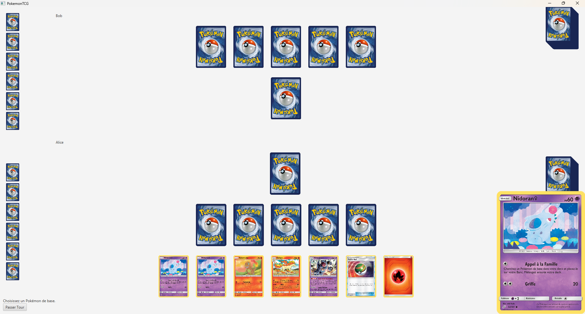

📋 Contexte
Projet réalisé en trinôme (SAE S2.01 + S2.02). La première phase portait sur le moteur de jeu en Java (logique, règles, tests unitaires JUnit). La seconde phase consistait à intégrer une interface graphique JavaFX en respectant l'architecture MVC stricte fournie.
🚀 Démarche & Implication
Implémentation du moteur de jeu complet et d'une grande partie de l'interface graphique. Autonomie totale sur la conception de l'architecture objet (classes Pokémon, Énergie, Dresseur, Attaque). Travail approfondi sur le polymorphisme et l'héritage pour gérer les spécificités de chaque type de carte. Utilisation des Bindings JavaFX pour la réactivité de l'UI.
🖼️ Aperçu

Architecture UML — Moteur de jeu

Interface JavaFX — Vue du plateau de jeu